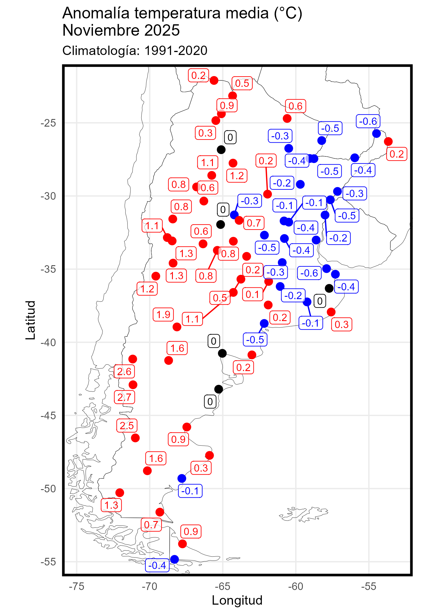

Bienvenidos a seguimiento_temperaturas_argentina
--------------------------------------------------------------------
--------------------------------------------------------------------
Temperaturas medias mensuales, estacionales y anuales.
--------------------------------------------------------------------
Datos diarios de temperatura mínima y máxima.
Datos diarios de temperatura mínima y temperatura máxima pueden ser consultados en este blog. Incluye información de estaciones desactivadas y de otras redes. Las tablas son actualizadas una vez por año, en enero.
--------------------------------------------------------------------
Anomalía al norte de los 40°S.
Anomalía de la temperatura mínima media y máxima media mensual al norte de los 40°S desde el año 1971, siguiendo la metodología descripta en este posteo.
--------------------------------------------------------------------
Observatorio Central de Buenos Aires.
--------------------------------------------------------------------
Próximamente: Récords.
--------------------------------------------------------------------
Hechos meteorológicos históricos.
--------------------------------------------------------------------
Anales de la Oficina Meteorológica Argentina.
--------------------------------------------------------------------
La curación de los datos ofrecidos en esta página requieren tiempo y dedicación. Apoye este proyecto con un cafecito.